Write your notes once.
Review them for years.
Anki Papers is an Anki add-on for writing lecture notes as "papers": one document per topic. Mark the lines worth remembering and they become Anki cards, which stay linked to your notes as you edit them.
01Four ways to mark a line
Anything you don't mark stays plain reading text. A marked line becomes a basic, reversible or cloze card, and the headings above it ride along as context.
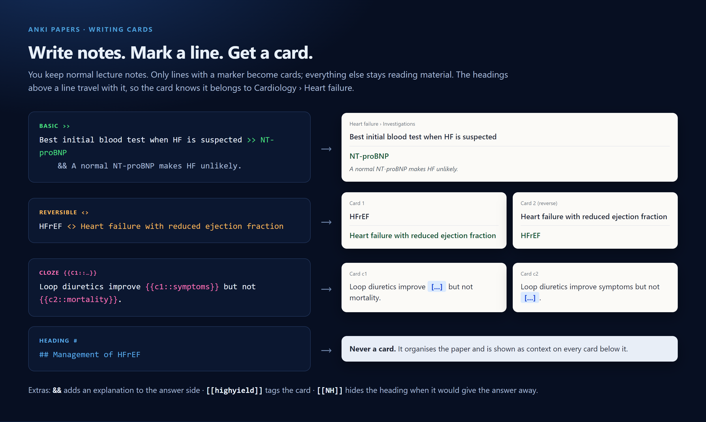
02A study loop that fits medical school
One paper per topic (Heart failure, Anaemia, Brachial plexus…), organised in folders by year and system. Your notes and your cards stay in one place.
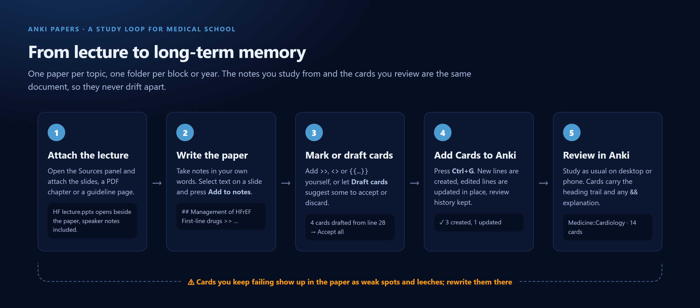
03The editor at a glance
Each card line shows its type on the right. Tables, explanations and links sit alongside the cards, so the paper still reads like proper notes.
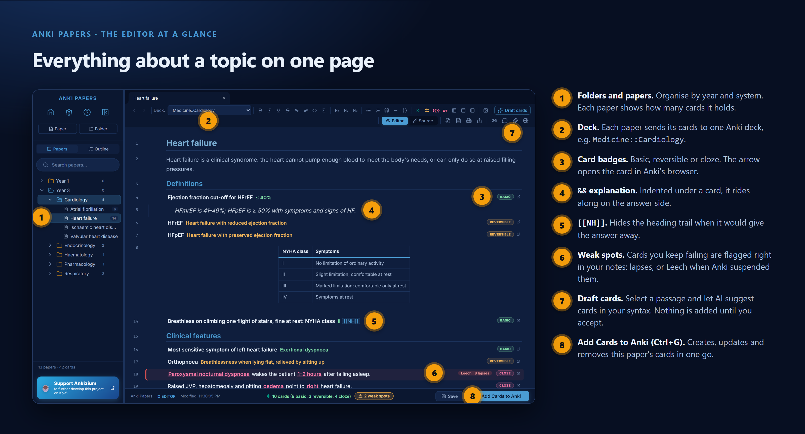
04Add Cards to Anki
Press Add Cards to Anki or Ctrl+G. New lines become new cards. A line you've reworded updates its existing card, so your review history is kept. Delete a line and its card is removed.
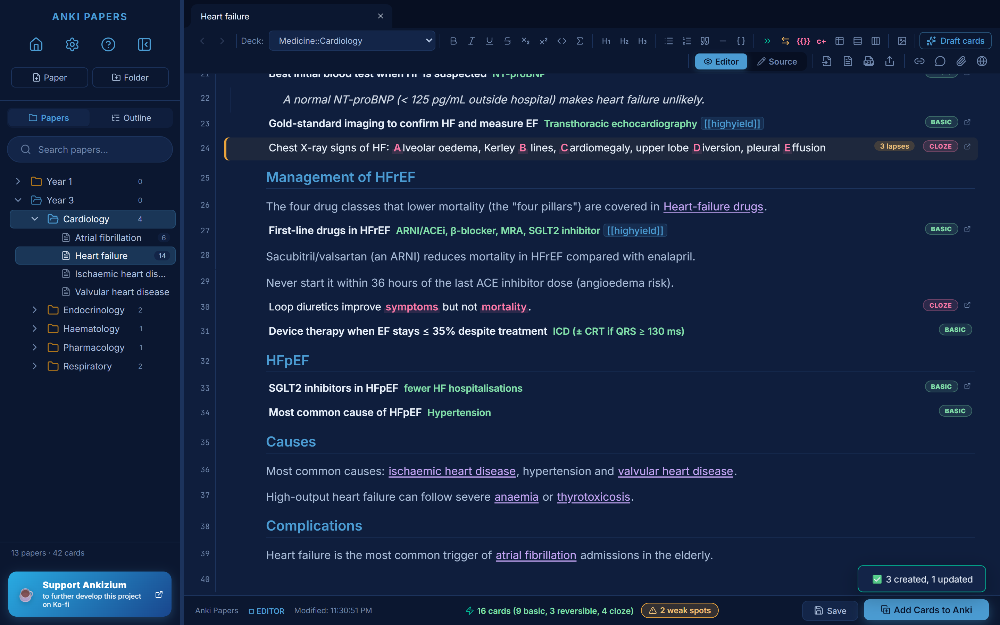
05Weak spots: see what you keep forgetting
Anki Papers reads your review history. Cards you keep failing are highlighted in the paper with their lapse count, and leeches that Anki has suspended are marked Leech. Fix the card where you wrote it: split it, add an && explanation or reword it, then press Ctrl+G.
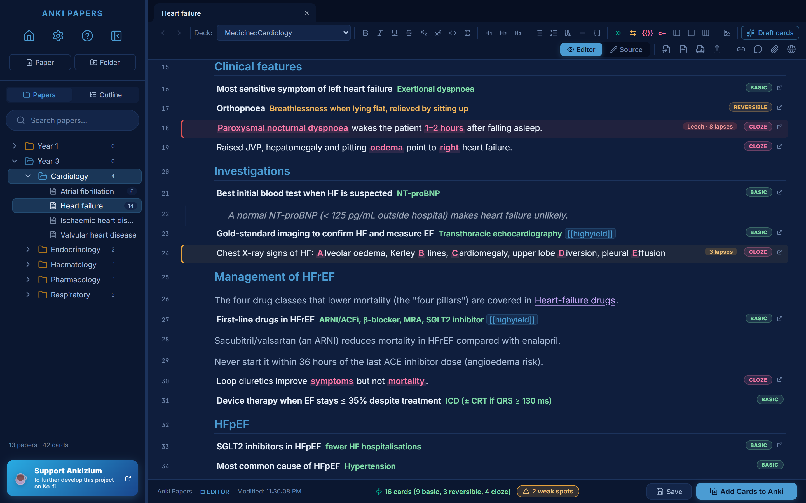
06Your lecture beside your notes
The paperclip opens Sources. Attach the lecture slides (PowerPoint, with speaker notes), a PDF chapter, a Word handout or a guideline web page. Select text on a slide to Add to notes, Draft cards from it, or Ask about it.
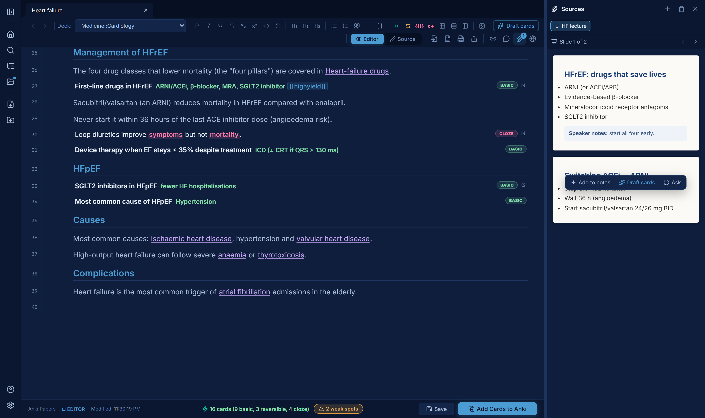
07Draft cards with AI
Click into a line or select a passage, then press Draft cards (Ctrl+Shift+D). Suggested cards appear underneath, written in your syntax. Accept (✓), discard (✗) or redraft (↻) each one. Nothing reaches Anki until you accept it.
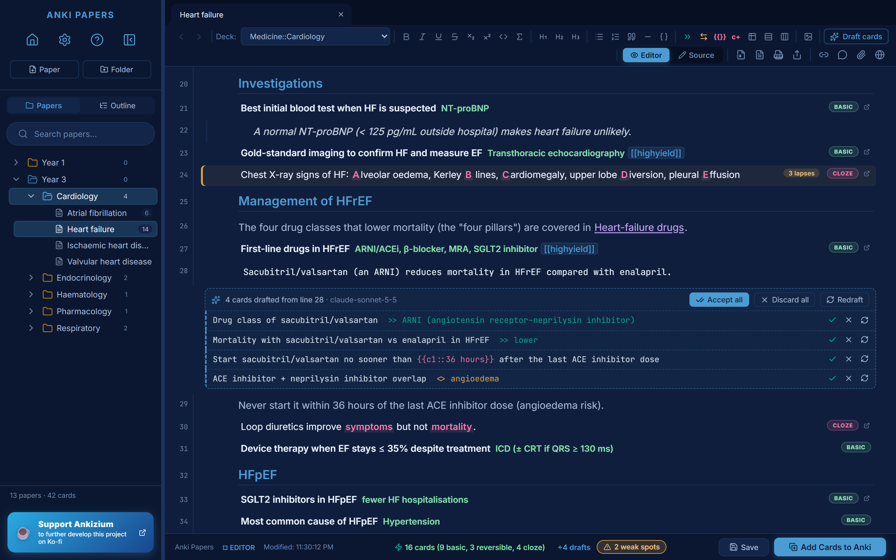
08Ask about the paper
Ctrl+Shift+A opens a chat about the open paper. Chips choose what it reads: this paper, the open slide, the whole source, linked papers. Answers cite lines and slides as clickable chips. Turn on Stick to my sources to keep it to your own material, then insert an answer as an && explanation or turn it into cards.
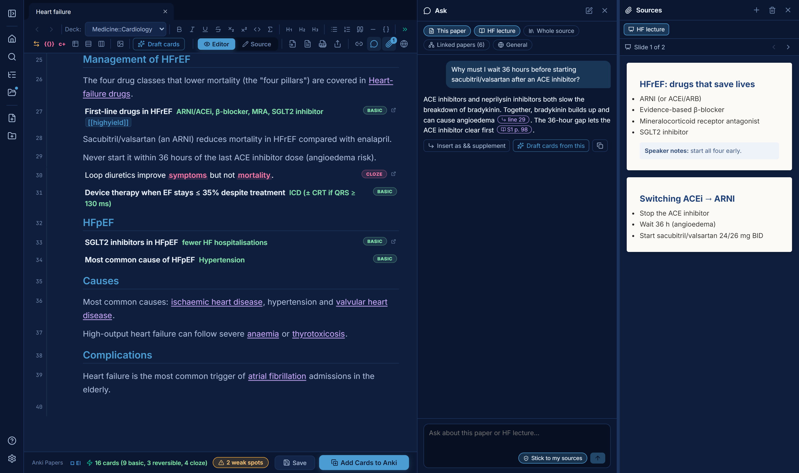
09Link topics the way medicine is linked
Highlight a phrase, right-click and choose Create link… to point it at any heading in another paper, e.g. from "rate control" in Atrial fibrillation to β-blockers in Heart-failure drugs. Double-click a link to follow it. The Links panel lists what cites the open paper, and the Graph shows how your whole library connects.
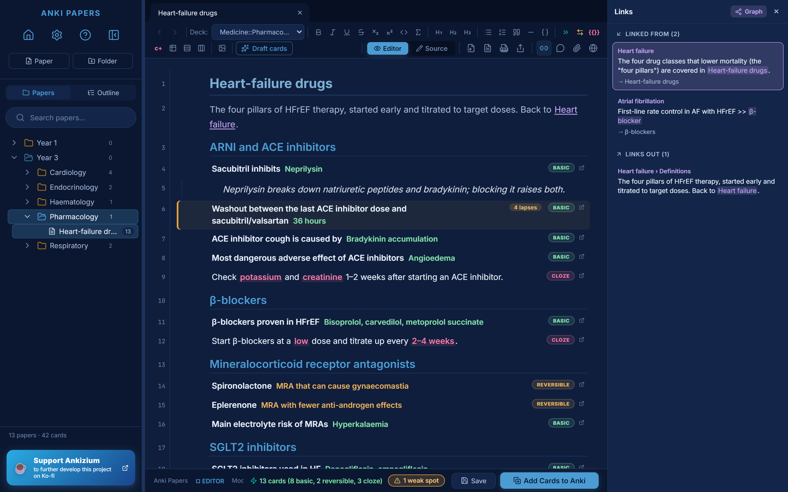
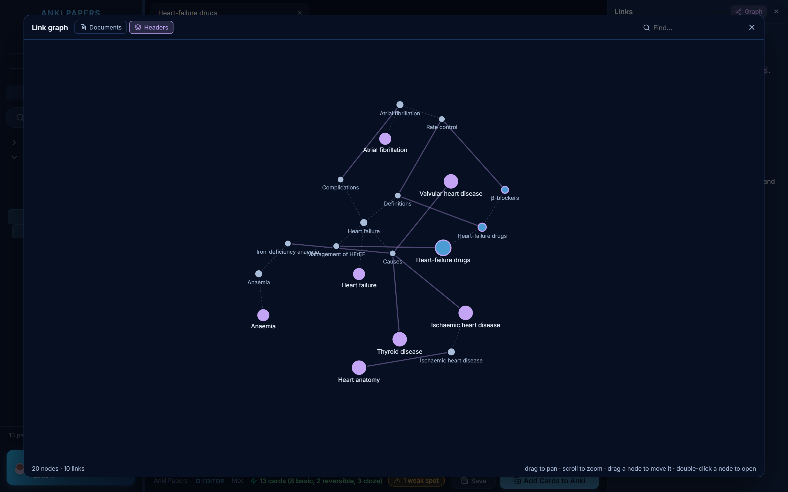
10Image occlusion for anatomy
Hover a diagram and click Occlude. Anki's built-in Image Occlusion editor opens with the picture loaded. Draw masks over the labels and press Add. A badge on the picture then counts its occlusion cards, and clicking it opens them for editing.
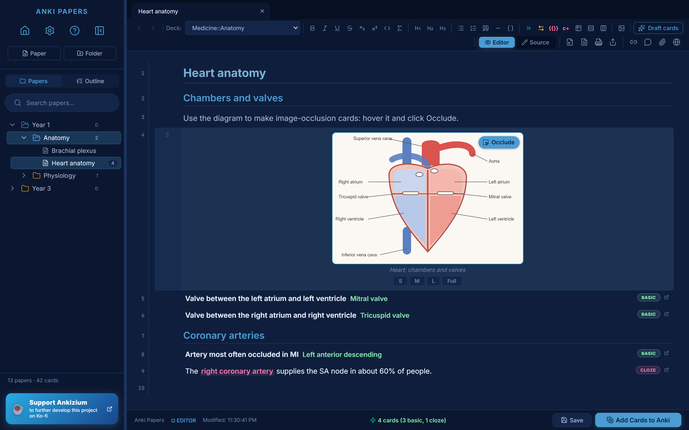
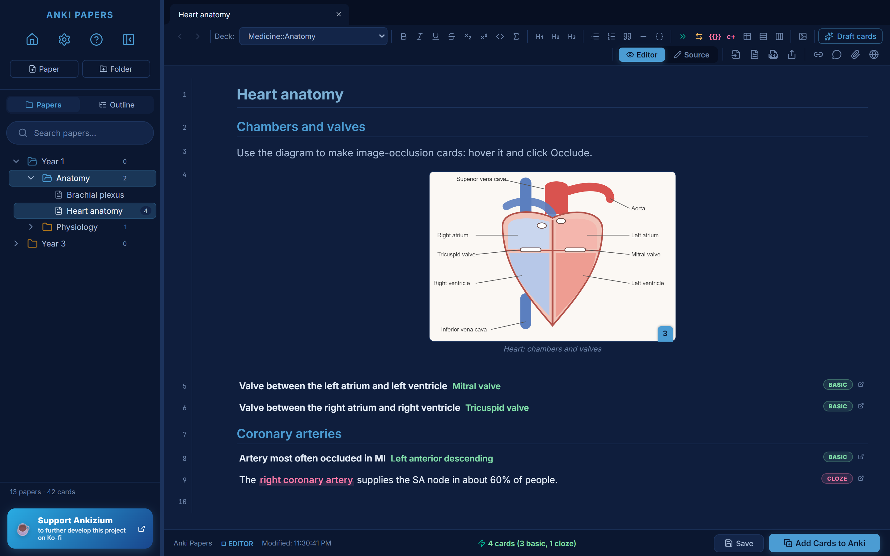
11Search every paper
Each result is a line, shown with its heading trail, e.g. Heart failure › Management of HFrEF · line 29. Use quotes for exact phrases, -word to exclude, and title:, folder:, deck: or tag: to narrow a search.
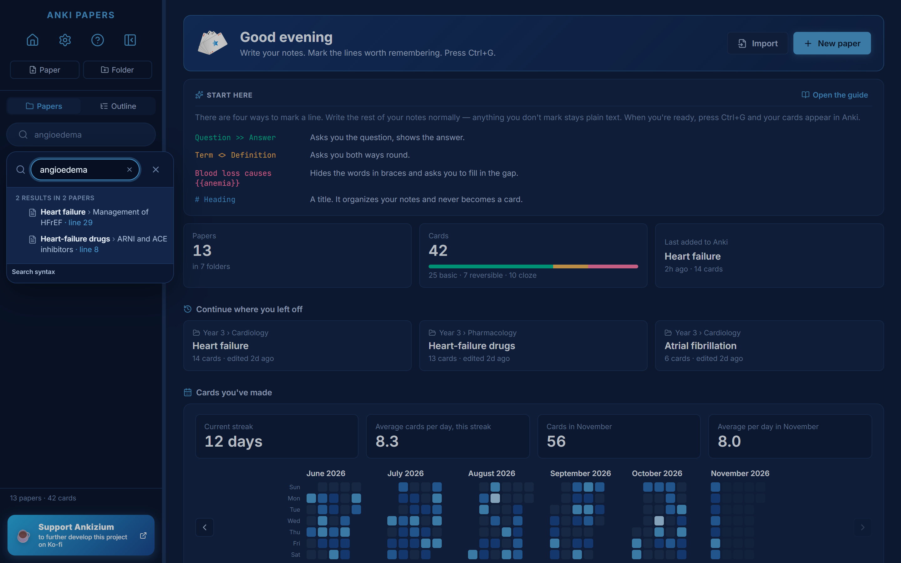
12Home: where you left off
The home page shows a reminder of the syntax, your card totals by type, the papers you were working on and a calendar of the cards you've made.
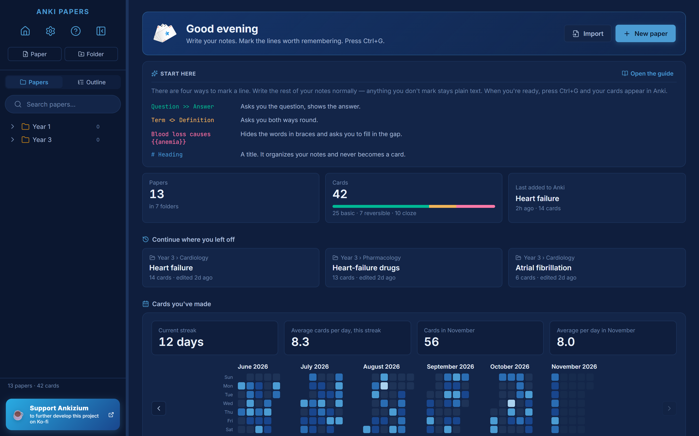